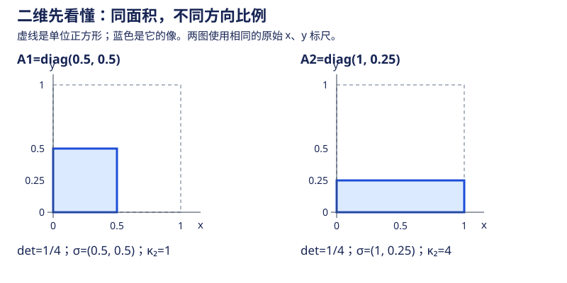

本页目录
高代 II · 行列式与线性方程组
一切从解方程组开始。行列式回答"方阵方程组何时唯一可解"，Gauss 消元给出通用算法，秩的概念刻画解集结构。本页的解的结构定理是整个线性代数第一个"结构级"结果。
学习层：行列式是有向体积账本，不是“坏程度”单指标
先修与去向：先会解二元一次方程组，并读过多项式与根；本页后进入矩阵运算与线性空间。误差与条件数的计算继续看数值线性方程组。本页方程组默认实系数；域上的代数结论仍成立，但“有自由变量就无穷多解”需要系数域无限。
1. 具体情境：坐标框架把一个小立方体送到哪里？
把矩阵 \(A\) 看成一个三维坐标设备：标准基的三个箭头变成 \(A\) 的三列，单位立方体变成一个平行六面体。实验使用
实验限制 \(0\le s\le1.4\)、\(-0.8\le k,h\le0.8\)、\(0.5\le b\le1.5\)。其中 \(s\) 控制对角尺度（\(h\ne0\) 时并非把整个矩阵乘以同一个数），\(k\) 控制各向异性，\(h\) 是列剪切，\(B\) 的列可以读成另一套坐标基。你会看到：剪切可能改变形状却不改体积，复合会按乘法组合体积因子，交换两列会改变方向。
2. 揭示前预测：先判断公理会留下什么
打开实验前，先回答五个问题：
- 把一列加上另一列的倍数，行列式是否改变？
- 交换两列后，有向体积的符号和绝对值分别怎样变化？
- 经过换基矩阵 \(B\) 后，\(\det(AB)\) 应该是乘积、和，还是只看 \(A\)？
- 方阵 \(\det A=0\) 提供的是“数值偏小”还是“不可逆与体积塌缩”的证书？
- \(\det A\) 的绝对值很小，是否单独就等价于坏条件数？
先作答再揭示，随后可以连续拖动滑块作比较。一个有向体积数字同时包含尺度和方向，但它没有记录每个奇异方向分别被拉伸多少。
3. 正式桥：交替多线性、换基与奇异值
行列式对每一列线性；两列相同则为零；交换两列变号。把一列替换为“该列加另一列的倍数”时，新增项含有重复列，因此消失，这就是消元中列剪切保持行列式的原因。三维体积满足
上式的 \(A\) 指尚未交换列的三角矩阵；实验勾选交换前两列后，\(\det A=-s^3\)，其绝对值与奇异值不变。\(B\) 总可逆，因为 \(b>0\)。
复合与换基要分清两端。 若 \(B\) 的列是新输入基在旧坐标中的表示，\(x_{\rm old}=Bx_{\rm new}\)，则
这里输出仍用旧基。若要把同一线性算子的输入和输出都改用新基，还需 \(y_{\rm new}=B^{-1}y_{\rm old}\)，矩阵才是 \(B^{-1}AB\)；它的行列式仍是 \(\det A\)，不是额外乘 \(\det B\)。实验右图展示 \(AB\) 的复合效果，两张图共享同一投影和缩放，虚线给出原单位立方体。投影的屏幕面积不能当作三维体积。
为什么一个体积数字不够？ 对可逆实方阵，奇异值分解 \(A=U\Sigma V^\top\) 的两个正交矩阵只旋转或反射，\(\Sigma\) 沿互相垂直的方向伸缩。因此
统一缩放 \(tA\)、\(t\ne0\)，所有奇异值乘 \(\lvert t\rvert\)，所以条件数不变，体积却乘 \(\lvert t\rvert^n\)。例如 \(10^{-12}I_3\) 的行列式是 \(10^{-36}\)，条件数仍为一。相反，\(\operatorname{diag}(\eta,1,\eta^{-1})\)、\(0<\eta<1\) 的行列式恒为一，条件数是 \(\eta^{-2}\)，可以任意大。这说明乘积和比值是两本不同的账。

本族 \(h=0,s>0\) 时，三奇异值为 \(se^{\lvert k\rvert},s,se^{-\lvert k\rvert}\)，故 \(\kappa_2=e^{2\lvert k\rvert}\)。预设“均匀缩小”和“同体积但拉扁”都取 \(s=0.5\)，体积同为 \(1/8\)，只改变 \(k\)。
零体积不一定缩成一个点。 \(s=0,h\ne0\) 时，未交换列的矩阵为
第二、三列独立，所以立方体压成二维平行四边形；只有再令 \(h=0\) 才成为零矩阵、秩为零。交换前两列后，核方向相应变成 \(e_2\)。精确秩来自这些结构判断，不能用“绝对数值小于某阈值”替代。
JavaScript 失效时的静态 fallback：用两个对照读法检查“体积”和“条件”：
| 情形 | 有向体积 | \(\kappa_2\) | 结论 |
|---|---|---|---|
| \(A=0.5I\) | \(0.125\) | \(1\) | 体积小只是整体缩放，方向比例没有变坏 |
| \(A=\operatorname{diag}(0.1,1,1)\) | \(0.1\) | \(10\) | 同样是小体积量级，但各向异性造成敏感方向 |
| 交换两列 | 变为原值的相反数 | 奇异值不变 | 方向翻转，体积绝对值不翻倍 |
| \(\det A=0\) | \(0\) | 不可逆分支 | 体积塌缩，存在非零核向量 |
4. 定理与失败边界
- 定理桥：行列式是规范化的交替多线性函数；\(\det(AB)=\det A\det B\) 记录复合后的有向体积因子。
- 不可逆证书：对有限维方阵，\(\det A=0\) 等价于不可逆、秩亏和非零核；这是确定的结构证书，不只是浮点数告警。
- 小 det 边界：\(\det A\) 还随单位和整体缩放改变。小 det 不单独等价于坏条件数；要比较奇异值比例、输入输出尺度和误差模型。
- 换基边界：有向体积的正负依赖列的定向。若只讨论无向几何体积，应读 \(\lvert\det A\rvert\)，不能把符号当成长度。
- 实验边界：有限 SVG 只展示一个三维参数族和一组换基证据；它不能替代对所有阶数、所有矩阵的公理化证明。
5. 迁移练习：给出证据，不只报一个 det
- 比较 \(A_1=0.5I_3\) 与 \(A_2=\operatorname{diag}(1,0.5,0.25)\) 的行列式、奇异值和条件数。各将前两列交换后，哪些量改变？
- 在二维取 \(A=\operatorname{diag}(2,1)\)、\(B=\begin{pmatrix}1&1\\0&1\end{pmatrix}\)。分别算 \(AB\) 与 \(B^{-1}AB\)，解释二者描述的坐标约定。
- 取 \(s=0,h=0.6\)、不交换列。给出 \(Ax=(0.3,0.3,0)^\top\) 的通解，再说明把右端改成 \((0.3,0.3,0.01)^\top\) 为什么无解。
展开三道迁移题答案
- 两者行列式均为 \(1/8\)。\(A_1\) 的奇异值是 \((0.5,0.5,0.5)\)，条件数一；\(A_2\) 的奇异值是 \((1,0.5,0.25)\)，条件数四。交换列相当于右乘正交置换矩阵，奇异值不变，行列式变为 \(-1/8\)。
- \(AB=\begin{pmatrix}2&2\\0&1\end{pmatrix}\)，\(B^{-1}AB=\begin{pmatrix}2&1\\0&1\end{pmatrix}\)。前者把新输入坐标映到旧输出坐标；后者输入和输出都用新基。两者此例行列式都是二，因为恰巧 \(\det B=1\)；不能靠这一个数辨认是否完成了两端换基。
- 第二行给 \(0.3x_3=0.3\)，所以 \(x_3=1\)；第一行给 \(0.6x_2-0.3x_3=0.3\)，所以 \(x_2=1\)。\(x_1\) 自由，通解为 \((0,1,1)^\top+t(1,0,0)^\top\)。新右端要求第三行 \(0=0.01\)，直接矛盾；这对应增广矩阵的秩大于系数矩阵的秩。
实验直接对列做 Jacobi 旋转估计奇异值，避免先形成 \(A^\top A\) 把条件数平方。本族还利用 \(\sigma_1\sigma_2\sigma_3=s^3\) 恢复最小奇异值；\(h=0\) 时直接用上述解析公式。它是限定参数族的教学实现，并非通用高精度 SVD 库。若正尺度的体积或最小奇异值下溢，账本保留“精确非零/满秩”并标明数值不可表示；不会自动宣判奇异。矩阵显示值也有舍入误差。
1. 行列式
定义（逆序数式） \(n\) 阶行列式
对全部 \(n!\) 个排列求和，\(\tau\) 为逆序数。等价的公理化定义更能说明它是什么：\(\det\) 是唯一满足 1. 对每行线性；2. 两行相等则为零；3. \(\det I = 1\) 的函数——行列式 = 规范化的有向体积（几何意义：列向量张成的平行多面体的有向体积；这也是 Jacobi 行列式出现在重积分换元里的原因，数分 VI）。
性质速查（全部由公理化定义直接推出）：
- 转置不变 \(\det A^\top = \det A\)（对行成立的对列全成立）；
- 换两行变号；某行乘 \(k\) 则值乘 \(k\)（推论 \(\det(kA) = k^n \det A\)）；
- 某行加上另一行的倍数值不变（消元法的合法性依据）；
- \(\det(AB) = \det A \det B\)（重要！但 \(\det(A + B)=\det A+\det B\) 一般不成立）；
- 上/下三角行列式 = 对角元之积。
展开定理（Laplace）：\(\det A = \sum_{j} a_{ij} A_{ij}\)（按第 \(i\) 行展开），\(A_{ij} = (-1)^{i+j} M_{ij}\) 为代数余子式。异行展开为零：\(\sum_j a_{ij}A_{kj} = 0\ (i \neq k)\)——两条合写成 \(A \cdot \mathrm{adj}(A) = (\det A) I\)（伴随矩阵，下一页逆矩阵的来源）。
计算工具箱：消元化三角（通用）；按零多的行列展开；加边法；递推法（三对角）；Vandermonde（默写级）：
（🔗 多项式插值唯一性、DFT 矩阵的母体。）
Cramer 法则：\(n\) 元 \(n\) 方程组 \(Ax = b\)，\(\det A \neq 0\) 时唯一解 \(x_j = \dfrac{\det A_j}{\det A}\)（\(A_j\) 为 \(b\) 替换第 \(j\) 列）。理论价值大，计算价值小，但复杂度要看你怎样算行列式：对单个行列式，按 Leibniz 公式枚举 \(n!\) 项且逐项重算 \(n\) 个因子的乘积，需要 \(O(n\,n!)\) 次算术运算（若连排列符号也朴素重算，开销还会增加）；若每个行列式都用消元，依次计算 \(n+1\) 个行列式约为 \(O(n^4)\)；直接对 \(Ax=b\) 做一次带选主元的消元只需 \(O(n^3)\)。因此实算选消元，不把“Cramer 法则”等同于固定的 \(n!\) 算法。
2. Gauss 消元与矩阵的秩
初等行变换三种：换行、某行乘非零常数、某行加另一行的倍数。任何矩阵可经行变换化为行阶梯形，进一步化为行最简形（主元为 1、主元列其余为 0）。
定义（秩） \(\mathrm{rank}(A)\) = 行阶梯形的非零行数 = 最大非零子式的阶数 = 行/列向量组的极大线性无关组大小（三个定义等价——第三个是"本体"，前两个是算法）。
线性相关性语言（方程组理论的词汇表）：向量组 \(\alpha_1,\dots,\alpha_s\) 线性相关 \(\iff\) 存在不全为零的 \(k_i\) 使 \(\sum k_i \alpha_i = 0\) \(\iff\) 某向量可由其余线性表出。极大线性无关组、向量组的秩、等价向量组秩相等。判定全部化归为"对拼成的矩阵消元看秩"。
3. 线性方程组解的结构（本页顶点）
方程组 \(Ax = b\)（\(m\) 个方程 \(n\) 个未知量），增广矩阵 \(\bar A = (A \mid b)\)。
定理（有解判别）
齐次组 \(Ax = 0\)：解集是 \(\mathbb{R}^n\) 的子空间（解的线性组合仍是解）；基础解系含 \(n - r\) 个解向量（\(r = \mathrm{rank} A\)），通解为其线性组合。求法：行最简形中自由变量轮流取 \(1\) 其余取 \(0\)。
非齐次组：解集 = 特解 + 对应齐次组的解空间：
几何图像：解集是过 \(x^*\)、方向为齐次解空间的"平面"（仿射子空间）。"通解 = 特解 + 齐次通解"这个结构在 ODE 线性方程（ODE 页）、线性递推中原样重现——线性问题的普遍范式。
🔗 AI 衔接：最小二乘（\(A^\top A x = A^\top b\)，法方程）是"无解方程组找最近解"，统计页回归的地基；秩亏损 = 特征共线性（正则化的动机之一，ai 课 01 讲岭回归）。
4. 典型例题
例 1（带参数方程组讨论） 讨论 \(\begin{cases} \lambda x + y + z = 1 \\ x + \lambda y + z = \lambda \\ x + y + \lambda z = \lambda^2 \end{cases}\) 的解。 解：系数行列式 \(\det A = (\lambda - 1)^2(\lambda + 2)\)。1. \(\lambda \neq 1, -2\)：Cramer 唯一解；2. \(\lambda = 1\)：三方程同为 \(x+y+z=1\)，\(r = r(\bar A) = 1 < 3\)，无穷解（两个自由变量）；3. \(\lambda = -2\)：把三条方程相加，左端为零而右端为 \(1-2+4=3\)，矛盾，故无解；此时 \(r(A)=2\)、\(r(\bar A)=3\)。流程：先算 \(\det\) 分参数，退化情形逐个消元。
例 2（Vandermonde 应用） \(n\) 个互异点上给定值的 \(\leq n-1\) 次插值多项式存在唯一。 解：系数方程组的系数阵为 Vandermonde，互异 ⇒ \(\det \neq 0\) ⇒ Cramer 唯一解。
例 3（基础解系） 求 \(\begin{cases} x_1 + x_2 - x_3 - x_4 = 0 \\ 2x_1 + x_2 + x_3 - 3x_4 = 0\end{cases}\) 的基础解系。 解：消元得行最简形 \(\begin{pmatrix} 1 & 0 & 2 & -2 \\ 0 & 1 & -3 & 1 \end{pmatrix}\)，自由变量 \(x_3, x_4\)：取 \((x_3, x_4) = (1,0)\) 得 \(\xi_1 = (-2, 3, 1, 0)^\top\)；取 \((0,1)\) 得 \(\xi_2 = (2, -1, 0, 1)^\top\)。通解 \(c_1\xi_1 + c_2\xi_2\)。\(\blacksquare\)
5. 原始资料与继续阅读
- MIT：Invariants of Transformations，从新基的列出发推导为什么同一算子两端换基需要相似变换。
- LAPACK：Jacobi SVD 的实现说明，说明直接列正交化、尺度处理与奇异值相对精度的问题；本页采用简化教学实现，未声称具有完整 LAPACK 的误差保证。
下一页：把矩阵从"数表"升格为"可运算的对象"——矩阵代数与秩的不等式体系。